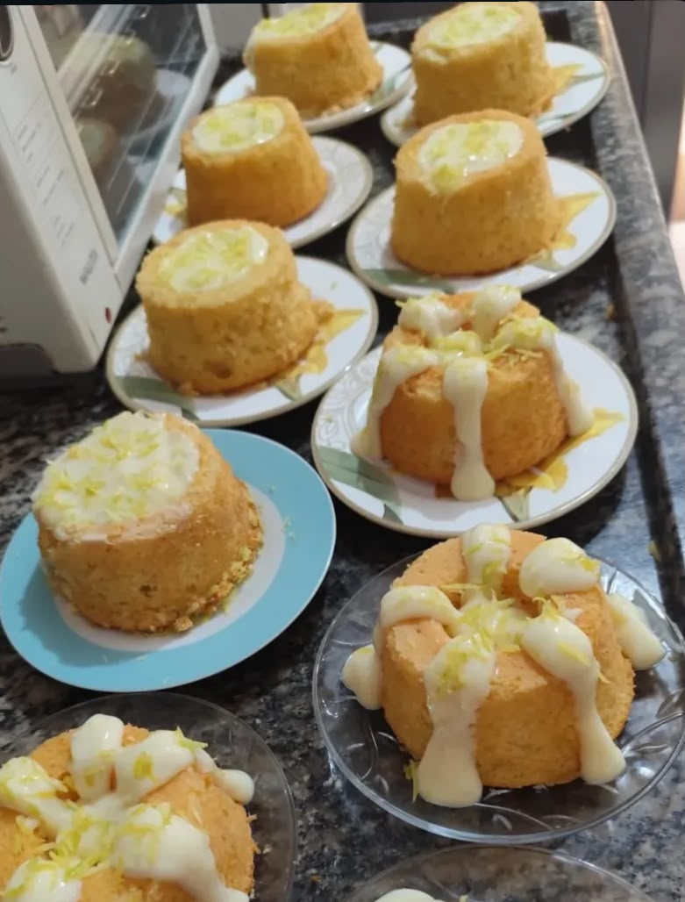

Um carinho que se transforma em sabor
A Doces Momentos começou com o amor de mãe colocado em cada receita feita para os filhos e netos. Hoje, esse afeto é compartilhado para fora de casa levando minhas receitas com muito carinho e atenção em cada detalhe para que os clientes possam desfrutar de uma experiência única.
Cada produto é preparado de forma artesanal, com atenção aos ingredientes, ao preparo e aos detalhes. Nosso propósito é levar mais sabor e afeto para os encontros, comemorações e pequenos momentos do dia a dia.
O que torna a loja especial: receitas próprias feitas com carinho e muito capricho.

Adicione aqui uma foto da loja ou dos produtos
Arquivo sugerido: imagens/loja.jpeg
Adicione aqui uma foto da confeiteira
Arquivo sugerido: imagens/confeiteira.jpeg
Prazer, sou Cláudia!
Sou apaixonada por fazer receitinhas caseiras e transformar momentos simples em experiências doces e memoráveis. A Doces Momentos nasceu do meu amor pela confeitaria e do desejo de compartilhar esse carinho com todos que apreciam um bom doce.
Meus filhos sempre me incentivaram a compartilhar minhas receitas com outras pessoas e levar isso com um propósito. Hoje, cada encomenda é feita com atenção aos detalhes, garantindo que cada pedacinho seja especial e cheio de sabor.
Para mim, confeitar é distribuir amor. E é esse carinho que quero compartilhar com cada pessoa que escolhe nossos produtos.
O que vai em cada pedacinho
Mais do que ingredientes, colocamos cuidado em todas as etapas.
Feito com carinho
Cada encomenda recebe atenção e cuidado do preparo à entrega.
Ingredientes selecionados
A escolha dos ingredientes faz parte do cuidado com o sabor e a qualidade.
Produção artesanal
Receitas preparadas em pequenos detalhes para adoçar ocasiões especiais.
Vamos adoçar seu momento?
Conheça nossas opções e escolha suas delícias favoritas.
Ver cardápio